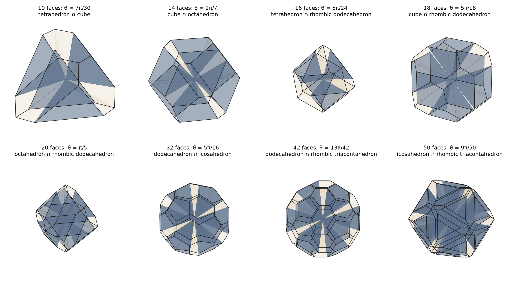
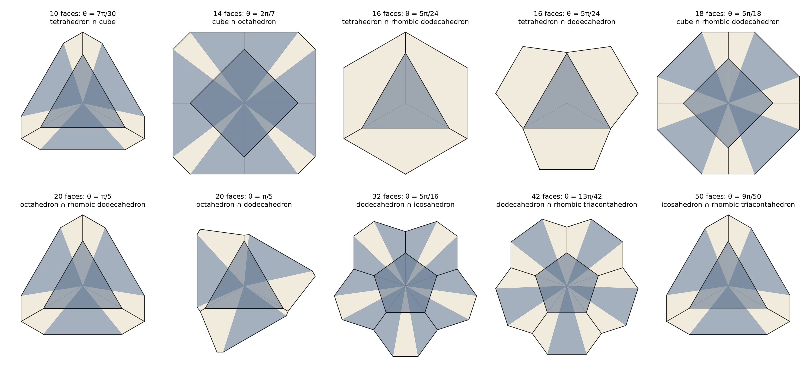
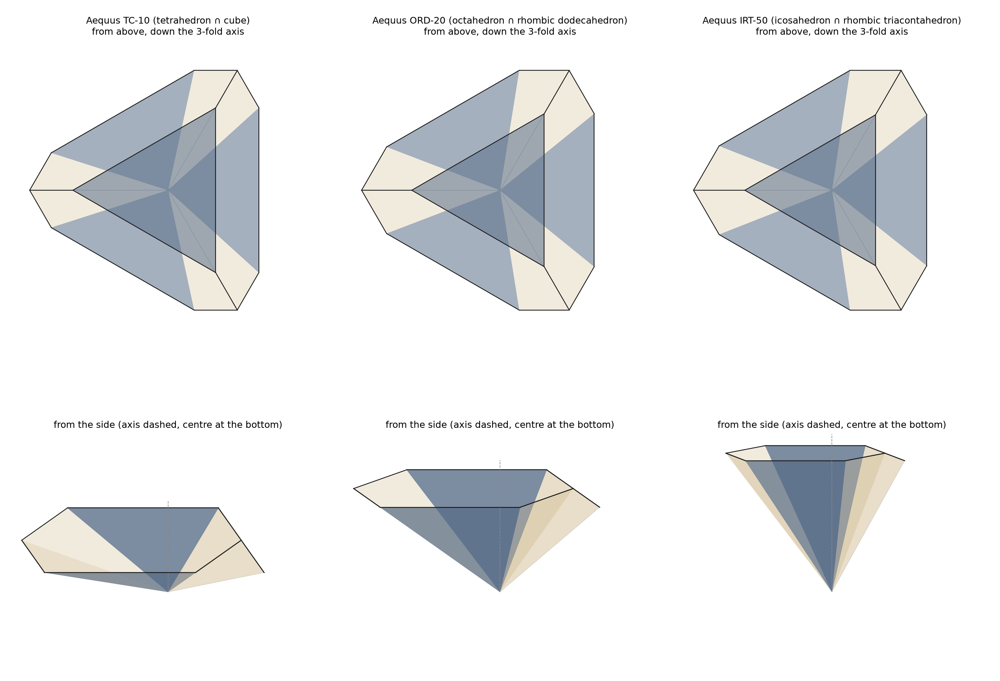

Fair Dice and the Regular Polygons Hidden in Their Vacuus
Version 2 adds Proposition 5 (b): the radii of the fair dice with 16 faces on T ∩ D, 42 and 50 faces have minimal polynomials of degree 16, 24 and 20, exact by elimination from Corollary 7, none Galois, so in no field of a regular polygon; Theorem 8: the regular polygon of the face count is in the lengths on exactly four of the twelve lines, C ∩ O, O ∩ RD, O ∩ D and D ∩ I (the first open question of Version 1, settled); Theorem 4A made exact by the same elimination; and a revised exposition.
Abstract. This paper finds the fair dice on the twelve simplest lines of solids with two kinds of face, gives them exactly, and shows what their fairness hides: a fair die hides the regular polygon of its face count in its Vacuus, and only four keep it in their lengths. Cut one Platonic or Catalan solid by another whose faces point along different symmetry axes, and let the second set of faces move out from the centre: one parameter μ runs a line of solids with two kinds of face. Twelve such lines have both face families along symmetry axes of the cube or the icosahedron, each family one orbit of the line's group; on each we find the member on which every face is equally likely, in the sense that it subtends the same solid angle 4π/N from the centre. These are fair dice with 10, 14, 16, 16, 18, 18, 20, 20, 24, 32, 42 and 50 faces, not face-transitive; four of them mix the cube's axes with the icosahedron's. Every fair member lies within 7% of the member whose faces all touch one sphere. For the 14-face die the values are exact: the cut is μ = 1 + √(2 tan(π/14) tan(2π/7)) in the cube's scale, and the ratio of inradius to circumradius is cot(2π/7). The dice with 20 and 32 faces have their radii in the fields of the regular 10-gon and 16-gon with √2 and √5; the 20-face die has (R/r)² = 11/3 + 2√2 − √5 − (2/3)√10, golden and silver together in a solid of cubic symmetry. The octahedron–dodecahedron die has R/r = 8 − 3√5. The other six dice with regular faces, with 10, 16 (both), 18, 42 and 50 faces, have radii in no regular polygon's field; for T ∩ D and the 42- and 50-face dice the minimal polynomials, of degree 16, 24 and 20, are found exactly by elimination. So the polygon is in the lengths on exactly four lines, C ∩ O, O ∩ RD, O ∩ D and D ∩ I (Theorem 8). Yet ten of the twelve show a regular polygon in their Vacuus. Where one family of faces are regular m-gons, the plates through their edges and the centre meet the plane through the face's axis and corner at θ = π/2 − (N − 2)π/(mN): 7π/30, 2π/7, 5π/24, 5π/18, π/5, 5π/16, 13π/42 and 9π/50, a whole multiple of π/N, or of π/3N on the lines with a tetrahedron. We prove this by hand from Girard's theorem; the two dice without regular faces show no such angle. The proof gives these ten dice in closed form, μf = b·a + (b·u)·√(tan²(π/m) tan²θ − 1); on the octahedron–rhombic dodecahedron line μf = (2√2 + 3 − √5)/(2√3).
What is shown. This paper determines the fair die on each of twelve lines of solids, exactly, and shows where its fairness leaves a mark: a fair die hides the regular polygon of its face count in its Vacuus, and only four keep it in their lengths. The first idea (§3) is that every line has a fair die. The second (§4) gives the exact dice and the fields of their lengths. The third (§5) is the hidden angle, which gives every fair die with regular faces in closed form. The fourth (§6) sorts the twelve lines by which keep the polygon in their lengths.
A die is fair when every face is equally likely. A cube is fair because its symmetry carries any face to any other. Diaconis and Keller called such dice fair by symmetry and showed that dice can also be fair by continuity: let one kind of face grow at the expense of another, and somewhere the chances pass through equality [1]. Rawlins designs such dice by making every face subtend the same solid angle from the centre, and gives examples of 5, 7, 9, 10 and 11 faces [2].
This paper finds those points exactly on the simplest lines of solids with two kinds of face, and reads them with the Vacuus, the set of plates through the centre and each edge [3]. On the line from the octahedron to the cube the fair member is the fair 14-face die (DICTO's Lucky 7). It sits next to the solid on which all 14 faces touch one sphere, DICTO's cube–octahedron solid of The Golden Ladder [4]; the two look almost alike. The hidden structure is the theme: a fair die shows on its surface only squares, triangles, pentagons and hexagons, but its Vacuus hides a regular polygon fixed by the number of faces. What it is not: the polygon is never a face of the die, and on most lines it is not in the die's lengths either; the two lines without regular faces, C ∩ D and RD ∩ D, are the near misses, fair but hiding no polygon.
Let A and B be two sets of unit vectors, each one orbit of the line's symmetry group and each along a symmetry axis of the cube or the icosahedron: the 4 face directions of the tetrahedron, the 6 of the cube, the 8 of the octahedron, the 12 of the rhombic dodecahedron (cubic and tetrahedral groups), and the 12 of the dodecahedron, the 20 of the icosahedron and the 30 of the rhombic triacontahedron (icosahedral group). The line is
S(μ) = { x : a·x ≤ 1 for a in A, b·x ≤ μ for b in B },
with N = |A| + |B| faces where both kinds are present. The family with fewer faces is A (on RD ∩ D, with 12 and 12, the rhombic dodecahedron's). At μ = 1 every face touches the unit sphere: the equal-depth member. Among solids with the same face directions it has the largest isoperimetric quotient 36πV²/S³ (Lindelöf [5]). The eight lines within one group are T ∩ C, C ∩ O, T ∩ RD, C ∩ RD, O ∩ RD, D ∩ I, D ∩ RT and I ∩ RT (T tetrahedron, C cube, O octahedron, D dodecahedron, I icosahedron, RD rhombic dodecahedron, RT rhombic triacontahedron). A cube sits in a dodecahedron with its corners on the dodecahedron's, so the two frames share the pyritohedral group of order 24 and its rotation subgroup of order 12; four more lines mix them: C ∩ D, O ∩ D and RD ∩ D, with the pyritohedral group, and T ∩ D, with only the 12 rotations of the tetrahedron, so that its die comes in a left and a right hand.
The twelve lines. Checked by enumeration. A fair member needs each family to be one orbit of the line's group: with three orbits, two shares must be fixed by one parameter. Among the axis orbits of the two frames, the pyritohedral group keeps C, O, RD and D whole and splits I (8 + 12) and RT (6 + 24); the tetrahedral rotations keep T and D whole and split I and RT further. This leaves the twelve lines. Lines through a face-transitive solid (T with the other tetrahedron, giving the octahedron, or O with the rest of I, giving the icosahedron) give only that solid and are left out. As controls, C ∩ I, O ∩ RT and T ∩ RT were run: where the A faces reach 1/N, the two orbits of the split family differ. Lines with faces off the axes form infinite families and are not treated here.
The model of a roll is the solid-angle model: a face's chance is the solid angle it subtends from the centre, divided by 4π, the rule of [2]. The centre is the centroid, fixed by the symmetry group. Solid angles are computed by Van Oosterom and Strackee's formula for a triangle [6].
Grow one kind of face at the expense of the other; somewhere in between, every face is equally likely.
Proposition 1 (existence). Exact. Each of the twelve lines has a member on which all N faces subtend 4π/N.
Proof. The faces of one family are congruent under the group, so each subtends 1/|A| or 1/|B| of the family's total. Where the B faces first appear, the A faces hold the whole sphere, 4π/|A| > 4π/N each; where the A faces vanish, they hold 0. The share is continuous in μ, so it passes 4π/N, and then the B faces hold 4π/N each too. This is Diaconis and Keller's continuity argument [1]. ∎
Table 1 gives the fair members; the faces are drawn in Figure 1. Each value was found at 140 digits, with the checks that every face of each family has the same solid angle (to 10⁻⁶⁰), that the shares are 1/N and that they sum to 1. Uniqueness on the whole line is proved for C ∩ O (Theorem 2 (a)); on the ten lines with regular faces the fair member is unique among the members with the face shapes of Table 1 (Corollary 7).
| N | line | μf | faces | r/R | hidden angle | × π/N | (R/r)² field |
|---|---|---|---|---|---|---|---|
| 10 | T ∩ C | 1.0659165951 | 3, 6 | 0.5416467591 | 7π/30 | 7/3 | none (not Galois) |
| 14 | C ∩ O | 1.0141631690 | 4, 6 | 0.7974733889 | 2π/7 | 4 | Q(cos 2π/7) |
| 16 | T ∩ RD | 1.0692105364 | 3, 5 | 0.6613354032 | 5π/24 | 10/3 | none (not Galois) |
| 16 | T ∩ D | 1.0603736500 | 3, 6 | 0.7494098635 | 5π/24 | 10/3 | none (not Galois) |
| 18 | C ∩ RD | 1.0312505091 | 4, 6 | 0.7917538694 | 5π/18 | 5 | none (not Galois) |
| 18 | C ∩ D | 1.0384442830 | 4, 6 | 0.7652355406 | none | μf of degree 48 | |
| 20 | O ∩ RD | 1.0370247603 | 3, 6 | 0.6818610396 | π/5 | 4 | Q(cos 2π/10, √2) |
| 20 | O ∩ D | 1.0265315223 | 3, 7 | 0.7741159964 | π/5 | 4 | ℚ(√5) |
| 24 | RD ∩ D | 0.9991525381 | 7, 4 | 0.8158046312 | none | μf of degree 64 | |
| 32 | D ∩ I | 1.0043619497 | 5, 6 | 0.9196689969 | 5π/16 | 10 | Q(cos 2π/16, √5) |
| 42 | D ∩ RT | 1.0072683224 | 5, 6 | 0.9274314879 | 13π/42 | 13 | none (not Galois) |
| 50 | I ∩ RT | 1.0155843036 | 3, 6 | 0.8375974356 | 9π/50 | 9 | none (not Galois) |
Next to the sphere. Computed. On the eleven lines where one family has fewer faces, μf > 1: the fair die is the equal-depth member with the larger family's faces moved slightly outward, by between 0.4% (D ∩ I) and 6.9% (T ∩ RD). On RD ∩ D, with 12 faces in each family, the dodecahedron's faces lie 0.085% inside the sphere. Touching one sphere does not make the chances equal, but it comes close: the sphere is the perfect die, and the equal-depth member is the roundest of its line.
The second idea: on a few lines the fair die can be written down exactly, and its lengths then show which regular polygon, if any, they belong to.
Theorem 2 (the fair 14-face die). Exact. In the cube's scale, |x|, |y|, |z| ≤ 1 and |x| + |y| + |z| ≤ S, let c = cos(2π/7) and T = tan(π/14)·tan(2π/7).
(a) Exactly one member of the line 1 < S < 3 is fair: Sf = 1 + √(2T) = 1.7565821359…, a root of S⁶ − 6S⁵ − 3S⁴ + 52S³ − 97S² + 74S − 13 (irreducible); μf = Sf/√3.
(b) With b = Sf − 1, b² = 2T = 1/c² − 2, and r/R = cot(2π/7) = 0.797473…; (R/r)² = 19 − 8c − 32c², in the field of the regular heptagon.
Proof. (a) For 1 < S ≤ 2 the corners are the permutations of (±1, ±b, 0), and a square subtends 4·arctan(b²/(2√(1 + b²))), which rises strictly from 0 to 4·arctan(1/(2√2)) > 4π/14; for 2 ≤ S < 3 the square grows into an octagon as nested sets and its share rises on to 1/6. So the crossing is unique, at b²/(2√(1 + b²)) = tan(π/14), that is b⁴ − 4t²b² − 4t² = 0 with t = tan(π/14), so b² = 2t(t + sec(π/14)) = 2t·tan(π/4 + π/28) = 2T. The minimal polynomial is by exact algebra. (b) c is a root of 8c³ + 4c² − 4c − 1 and T = 9 − 4c − 16c²; then c²(2T + 2) − 1 = 20c² − 8c³ − 32c⁴ − 1, which that polynomial reduces to 0. The squares lie at distance 1 and the hexagons at Sf/√3 = 1.0142, so r = 1 and R² = 1 + b² = (1 − c²)/c², so r/R = cot(2π/7), and 1/c² − 1 = 19 − 8c − 32c² by the same reduction. ∎
The heptagon comes from the face count: 4π/14 = 2π/7. Its appearance in the lengths, not only in the angles, is what Theorems 3 and 4 test on other lines.
Theorem 3 (the golden and silver 20-face die). Certified. The fair member of O ∩ RD has (R/r)² = 11/3 + 2√2 − √5 − (2/3)√10 = 2.1508407071…, root of 9x⁴ − 132x³ + 412x² − 432x + 144, which is irreducible over ℚ, factors into quadratics over each of ℚ(√2), ℚ(√5) and ℚ(√10), and splits over ℚ(√2, √5) = ℚ(cos 2π/10, √2).
Status. The polynomial was identified by PSLQ from the value at 140 digits; the closed form, its root property and the factorisations are exact. That the polynomial is the minimal polynomial of (R/r)² rests on the 140-digit agreement; a hand proof as in Theorem 2, or the elimination of Proposition 5 (b), is open.
So a die with only cubic symmetry, made fair, has φ in its radii: √5 enters through fairness alone, beside the √2 of its frame.
Theorem 4 (the 32-face die). Certified. The fair member of D ∩ I has R² = 35 − 20√2 + 8√10 − 14√5 + (−40 + 30√2 + 16√5 − 12√10)·√(2 + √2) = 1.1823250951…, r = 1, root of x⁸ − 280x⁷ + 10220x⁶ − 121800x⁵ + 483350x⁴ − 609000x³ + 255500x² − 35000x + 625, irreducible over ℚ and split over ℚ(cos 2π/16, √5). Status as for Theorem 3.
Theorem 4A (the octahedron–dodecahedron die). Exact. The fair member of O ∩ D has r = 1, R/r = 8 − 3√5 = 1.2917960675…, so (R/r)² = 109 − 48√5, root of x² − 218x + 361, and μf² = (65 − 22√5)/15; μf itself is exact by Corollary 7.
Status. Found by PSLQ in Version 1; the minimal polynomial x² − 218x + 361 is now found by the exact elimination of Proposition 5 (b) from Corollary 7, with its Galois group abelian (checked exactly).
Theorem 4B (the two dice without regular faces). Exact. (a) On C ∩ D the cube's face x = 1 is the rectangle with corners (1, ±Y, ±Z), Y = s − φ, Z = (s − 1)/φ, where s = μ√(φ + 2) is the distance of the dodecahedron's planes (x ± φz = s, φx ± y = s). The fair member is the root s near 1.975 of
YZ = sin(π/18)·√((1 + Y²)(1 + Z²)),
and μf is algebraic of degree 48. (b) On RD ∩ D each dodecahedron face is a quadrilateral with corner angles α1, α1, α2, α2, and fairness is α1 + α2 = 13π/12; with the corners linear in s this is a polynomial equation of degree 32 in s over ℚ(√2, √3, √5), and μf is algebraic of degree 64 (32 in μf²).
Proof. (a) The rectangle's corners are all alike under the pyritohedral group, so by Girard's theorem each corner angle is (2π + 4π/18)/4; equivalently the solid angle of the rectangle is 4 arcsin(YZ/√((1 + Y²)(1 + Z²))) = 4π/18. (b) Girard's theorem: 2α1 + 2α2 − 2π = 4π/24. With ci = cos αi and C = cos(13π/12), cos(α1 + α2) = C becomes c1² + c2² − 2Cc1c2 = 1 − C², and squaring once more clears the roots. In both cases the square roots of 2, 3, 5 and sin(π/18) were eliminated exactly by resultants, and the factor over ℚ that vanishes at the computed μf (to 94 and 121 digits) is irreducible. ∎
These degrees, 48 and 64, are why the search for a polynomial of degree at most 24 found none.
Most fair dice keep no polygon in their lengths: the numbers that measure them belong to no regular polygon at all.
Proposition 5 (dice with no polygon in their lengths). (a) Certified. For the fair members with 10, 16 (T ∩ RD) and 18 (C ∩ RD) faces, (R/r)² has a minimal polynomial of degree 8, 8 and 6 with both real and non-real roots (6 of 8, 6 of 8, 4 of 6 real). (b) Exact. For the fair members of T ∩ D (16 faces), D ∩ RT (42) and I ∩ RT (50), (R/r)² = 1.7805787675…, 1.1626160824… and 1.4253756059… has a minimal polynomial over ℚ of degree 16, 24 and 20, with 12 of 16, 16 of 24 and 14 of 20 roots real. In each case the field of (R/r)² is therefore not Galois over ℚ, so it lies in no cyclotomic field and in no field of a regular polygon (Kronecker–Weber).
Status of (a). As for Theorem 3; once the polynomial is right, the count of real roots is exact.
Proof of (b). On these three dice r = 1 and the farthest corners lie on three B planes only (found from the corners at 80 digits), so R = μf·ρ, where ρ is the distance of that corner of the B solid with its faces at distance 1; ρ² = κ is in ℚ(√5): 15 − 6√5, (9 − 3√5)/2 and (5 − √5)/2. By Corollary 7, μf = b·a + (b·u)·t with t² = tan²(π/m)·(1 − c)/(1 + c) − 1, c = cos 2θ, and on these lines (b·a)², (b·u)², (b·a)(b·u) and tan²(π/m) lie in ℚ(√5) (checked exactly). So y = R² = P + Qt with P, Q in ℚ(√5, c), and y is a root of (Y − P)² − Q²t². Eliminating c (by its minimal polynomial) and √5 by resultants gives a polynomial over ℚ with y as a root; its one irreducible factor that vanishes at y (the value agrees with the corner search to 10−38, and the other factors stay away from 0 there) is the minimal polynomial. The real roots are counted exactly by Sturm sequences. As controls, the same elimination gives x² − 218x + 361 on O ∩ D (Theorem 4A), and the corner search with an exact expression for R² gives x³ − 21x² + 35x − 7 on C ∩ O, the heptagon field of Theorem 2. ∎
For the 42- and 50-face dice no polynomial of degree ≤ 24 with coefficients below 10⁹ had been found at 140 digits: the coefficients of their minimal polynomials reach about 10²⁰. The polynomials are given in the study folder (logs field-td, field-dt and field-it).
The Vacuus of a solid is the set of its plates: for each edge, the plane through the edge and the centre [3]. On ten of the fair dice the A faces are regular m-gons, each centred on an axis of order m of the line's group: triangles on the 3-fold axes of T ∩ C, T ∩ RD, T ∩ D, O ∩ RD, O ∩ D and I ∩ RT, squares on the 4-fold axes of C ∩ O and C ∩ RD, pentagons on the 5-fold axes of D ∩ I and D ∩ RT (Table 1). On C ∩ D the cube's axes are only 2-fold in the pyritohedral group and its squares become rectangles; RD ∩ D has no regular faces. Checked on all twelve: the plates that slope, lying on no mirror of the cube's or the icosahedron's group, are on the ten dice exactly the plates over the edges of the A faces (Figure 2).
Where the mark lies. A fair die shows only triangles, squares, pentagons and hexagons on its surface. The number of faces N leaves its mark not on the faces, and on most lines not in the lengths, but in the angles of the plates.
The third idea: on every fair die with regular faces, the plates round a face meet at an angle fixed by the number of faces alone.
Theorem 6 (the hidden angle). Exact. Let a member of an axis line have its A faces regular m-gons centred on m-fold axes, each subtending the solid angle Ω from the centre. Then the plate over each edge of an A face meets the plane through the face's axis and either end of the edge at the angle θ = ((m − 2)π + Ω)/(2m), and its normal makes the same angle with that plane's normal. On the fair member Ω = 4π/N, so
θ = ((m − 2)N + 4)π/(2mN) = π/2 − (N − 2)π/(mN).
Proof. The m rotations about the axis of an A face map the face to itself, and the face has m corners, so the corners form one orbit: the face is a regular m-gon centred on the axis, and the cone from the centre over it cuts the unit sphere in a regular spherical m-gon. Its angle α at a corner is the angle between the two plates through that corner; the m angles are equal, so by Girard's theorem [7] mα − (m − 2)π = Ω. The plane through the axis and a corner is a mirror of the regular spherical m-gon: it swaps the two edges at the corner and their plates, so it bisects the angle between them, and each plate meets it at α/2 = θ. Two planes through a common line meet at the angle between their normals. ∎
No mirror of the die is used: only the rotations about the face's axis. On the ten fair dice with regular faces this gives 7π/30, 2π/7, 5π/24 (twice), 5π/18, π/5 (twice), 5π/16, 13π/42 and 9π/50, the values found independently by PSLQ at 100 digits from the computed vertices; for the 14-face die it is Theorem 2 (b), where the plate normal is (c, c, bc) up to symmetry. The angle θ is a whole multiple of π/N exactly when 2m divides (m − 2)N + 4: for squares this asks N ≡ 2 (mod 4), for pentagons N ≡ 2 (mod 10), for triangles N ≡ 2 (mod 6). The seven lines without a tetrahedron satisfy it (N = 6 + 8, 6 + 12; 12 + 20, 12 + 30; 8 + 12 twice, 20 + 30). The three with one have N = 4 + 6 and 4 + 12 (twice), all ≡ 4 (mod 6), so their angle is a multiple of π/3N instead. So each of the ten dice hides the regular N-gon in its Vacuus, or the 3N-gon on the tetrahedral lines. On the eight lines within one group the bisecting plane is a mirror of the die; on O ∩ D and T ∩ D it is a mirror of the icosahedron's group but not of the die, whose Vacuus therefore turns without reflecting (Figure 3). The two dice without regular faces show no rational angle: on C ∩ D and RD ∩ D no sloping plate meets an axis of the cube or the icosahedron at a rational multiple of π other than π/2 (checked, denominators ≤ 500).



Knowing that angle is enough to build the fair die exactly.
Corollary 7 (every fair die in closed form). Exact. On each of the ten lines with regular faces let a be the axis of an A face, V one of its corners, u the unit vector from a towards V in the plane through a and V, and b the unit normal of a B face through V. Then
μf = b·a + (b·u)·t, t = √(tan²(π/m)·tan²θ − 1),
with θ as in Theorem 6, and the corners of the A faces lie at distance tan(π/m)·tan θ from the centre. The fair member is unique among the members with the face shapes of Table 1.
Proof. The corner V, the face's centre on a, and the midpoint of an edge at V span a right spherical triangle with angles π/m at a, θ at V (Theorem 6) and π/2 at the midpoint. By Napier's rules the arc ρ from a to V has cos ρ = cot(π/m)·cot θ. The face lies at distance 1, so V = a + (tan ρ) u, with |V| = sec ρ = tan(π/m)·tan θ and tan ρ = t; and V lies on the B face, b·V = μf. A fair member with these face shapes has Ω = 4π/N, hence this θ, this V and this μf. ∎
| N | line | m | θ | b·a | b·u |
|---|---|---|---|---|---|
| 10 | T ∩ C | 3 | 7π/30 | 1/√3 | 1/√6 |
| 14 | C ∩ O | 4 | 2π/7 | 1/√3 | 1/√3 |
| 16 | T ∩ RD | 3 | 5π/24 | √(2/3) | 1/(2√3) |
| 16 | T ∩ D | 3 | 5π/24 | √((5 + 2√5)/15) | √((5 − √5)/30) |
| 18 | C ∩ RD | 4 | 5π/18 | 1/√2 | 1/2 |
| 20 | O ∩ RD | 3 | π/5 | √(2/3) | 1/(2√3) |
| 20 | O ∩ D | 3 | π/5 | √((5 + 2√5)/15) | √((5 − √5)/30) |
| 32 | D ∩ I | 5 | 5π/16 | √((5 + 2√5)/15) | √((5 + √5)/30) |
| 42 | D ∩ RT | 5 | 13π/42 | √((5 + √5)/10) | ½√((5 + √5)/10) |
| 50 | I ∩ RT | 3 | 9π/50 | (√3 + √15)/6 | (√15 − √3)/12 |
For C ∩ O, t² = tan²(2π/7) − 1 = 2T and μf = (1 + √(2T))/√3, Theorem 2 again. For O ∩ RD the root comes out: 3 tan²(π/5) − 1 = 3(5 − 2√5) − 1 = (3 − √5)², so μf = (2√2 + 3 − √5)/(2√3), with √5 from the pentagon of θ = π/5 and √2, √3 from the cubic frame. O ∩ D has the same θ and the same root: μf = √((5 + 2√5)/15) + (3 − √5)·√((5 − √5)/30). The lengths keep the polygon exactly when this square root stays in the polygon's field; Theorems 3, 4 and 4A and Proposition 5 show that it does for C ∩ O, O ∩ RD, O ∩ D and D ∩ I, and not for T ∩ C, T ∩ RD, C ∩ RD, T ∩ D, D ∩ RT and I ∩ RT. The polygon is never a face: it shows in the plates.
The fourth idea sorts the twelve lines: every fair die with regular faces hides its polygon in its plates, but only four also carry it in their lengths.
Theorem 8 (the polygon in the lengths). Of the twelve fair dice of the axis lines, (R/r)² lies in the field of a regular polygon exactly on four: C ∩ O (the heptagon, Theorem 2), O ∩ RD (the 10-gon with √2, Theorem 3), O ∩ D (ℚ(√5), Theorem 4A) and D ∩ I (the 16-gon with √5, Theorem 4). On T ∩ C, T ∩ RD, C ∩ RD, T ∩ D, D ∩ RT and I ∩ RT the field of (R/r)² is in no field of a regular polygon (Proposition 5); C ∩ D and RD ∩ D have no regular faces and hide no polygon (Theorems 4B and 6).
Status. Exact for C ∩ O, O ∩ D, T ∩ D, D ∩ RT and I ∩ RT and for the two dice without regular faces; certified (minimality by PSLQ at 140 digits) for O ∩ RD, D ∩ I, T ∩ C, T ∩ RD and C ∩ RD.
Proof. Collect Theorems 2, 3, 4, 4A and 4B and Proposition 5 line by line, as in Table 1. ∎
Known and used. Fairness by continuity, and the existence argument of Proposition 1 (Diaconis and Keller [1]); the equal-solid-angle rule (Rawlins [2]); the solid angle of a triangle (Van Oosterom and Strackee [6]); Lindelöf's theorem [5]; Girard's theorem [7]; Napier's rules for right spherical triangles; the Kronecker–Weber theorem; the solids of the lines (Platonic, and Catalan's rhombic dodecahedron and rhombic triacontahedron); the Vacuus [3]; DICTO's equal-depth cube–octahedron solid [4].
Claimed here, not found in the sources checked. The fair members of the twelve axis lines and their values, and the enumeration of the lines; the exact value of Theorem 2 and its heptagonal identities; the radii of Theorems 3 and 4 and the field split of Proposition 5, with the exact minimal polynomials of Proposition 5 (b) and Theorem 4A; the sorting of the twelve lines in Theorem 8; the position just past the equal-depth member; the hidden angles of Theorem 6, the closed forms of Corollary 7, the value R/r = 8 − 3√5 of Theorem 4A and the exact equations of Theorem 4B.
Sources checked (18 November 2026): Diaconis and Keller [1], read in full; Rawlins [2], read (claims and examples); Riemer, Stoyan and Obreschkow, arXiv:1302.3925, and Yong and Mahadevan, arXiv:1008.4559, abstracts; the full text of the 348 papers of our reference library, searched for "fair dice", "14-sided", "14-face" and tan(π/14); a web search for fair dice by equal solid angles on truncated polyhedra, which found Rawlins's patent, The Dice Lab's design page, M. Dominus's blog (2007) and A. P. Goucher's "Fair dice" (cp4space, 2013: a fair triangular prism and the pseudo-deltoidal icositetrahedron, no cut Platonic or Catalan solids); OEIS, searched for the digits of Sf, T, b/(1 − b) and cot(2π/7), with no entry. McCooey's Visual Polyhedra catalogue (20 November 2026), all 47 sections: no section on dice or equal solid angles; Michon's Numericana page on dice (mesohedra: equal solid angles; examples with 5 and 10 faces); Sherman's fair-dice page (loki3, 2010–2012: isohedra and grouped faces, no solid angles); Taniguchi and Uehara, arXiv:1810.12108, and Irving and Patel (Oxford), titles and abstracts. None gives a die cut from two solids or an enumeration by symmetry group.
A fair die hides the regular polygon of its face count in its Vacuus, and only four keep it in their lengths.
This paper gives:
DICTO · dictospheres.com